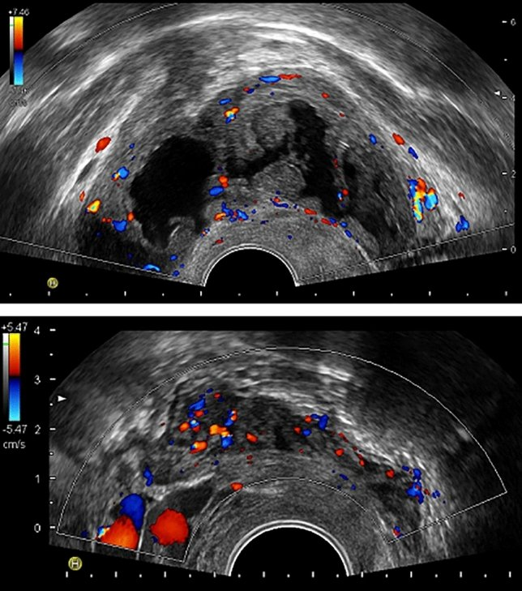
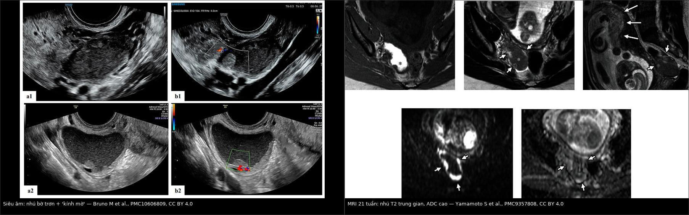
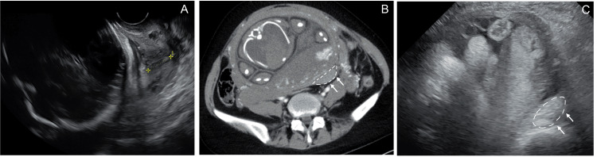
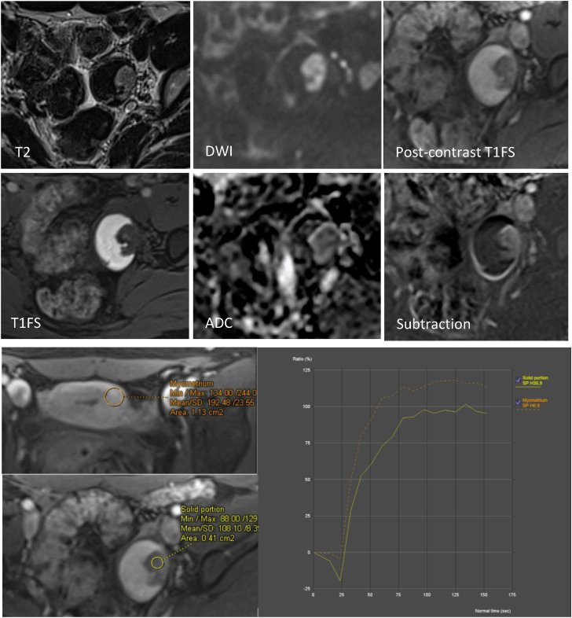
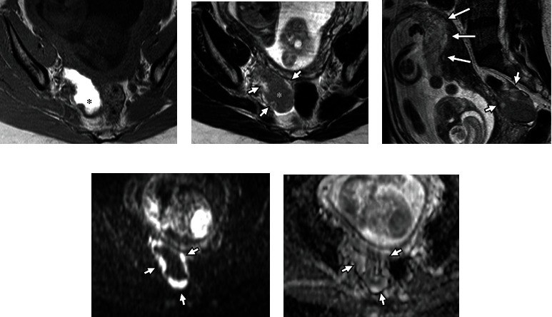
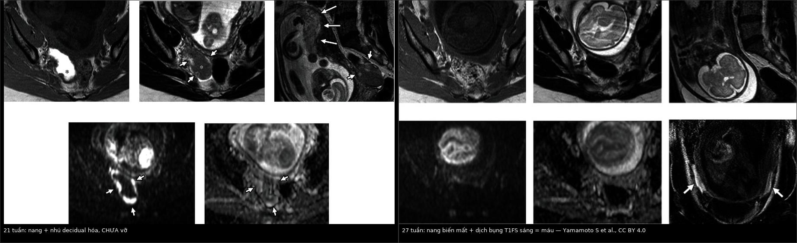
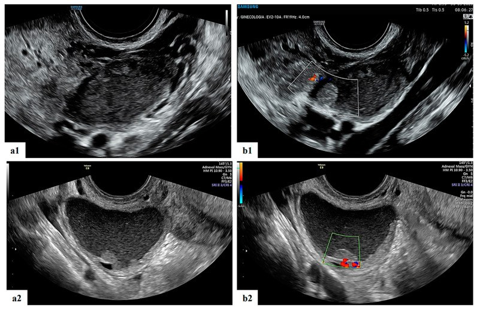

583 — Nang lạc nội mạc buồng trứng trong thai kỳ: decidualization giả ác, vỡ – xoắn & xử trí bảo tồn / Ovarian endometrioma in pregnancy
Tags: pattern:nang-t1-sang pattern:decidualization vung:buong-trung vung:thai-ky protocol:MRI-chau protocol:TVUS-thai incidentaloma:nang-buong-trung
Mức chắc chắn (certainty): tổng hợp y văn (literature synthesis) — tổng hợp từ đoàn hệ tiến cứu, ca nguyên văn có chuỗi MRI và các bài tổng quan mở; số liệu lấy trực tiếp từ nguồn ghi ở sources.md.
1. Tổng quan bệnh học – cơ chế hình ảnh
- Bối cảnh dịch tễ (ngưỡng định lượng):
- Khối phần phụ gặp ở 0,04–1,3% thai kỳ; siêu âm có thể thấy nang phần phụ ở 4,1–24,9% thai phụ, phần lớn tự thoái triển.
- Trong các nang phát hiện sớm, nang lạc nội mạc chiếm ~4–5%; đa số nang sau 16 tuần là u quái trưởng thành.
- Ung thư buồng trứng (kể cả giáp biên) chỉ chiếm 1–8% khối phần phụ trong thai; xoắn phần phụ 0,2–3%.
- Decidualization là gì: dưới nồng độ progesterone cao của thai kỳ, mô đệm lạc nội mạc chuyển thành tế bào decidual — phù nề, tăng sinh mạch, tạo nhú/nốt thành dày. Đây là biến đổi sinh lý, tạm thời, không phải ung thư.
- Tần suất và thời điểm: y văn cũ nêu ~12% nang lạc nội mạc có phản ứng decidual; đoàn hệ tiến cứu 45 nang (thụ tinh ống nghiệm) ghi nhận 16% (95% CI 8–29%) ở tuần 11–13. Không ca nào có dấu hiệu decidualization ở tuần 6–7 → đây là hiện tượng của tam cá nguyệt 2, thoái triển cuối thai kỳ/sau sinh.
- TẠI SAO hình ảnh giống ác (vật lý + mô bệnh):
- T1W rất sáng, KHÔNG mất khi fat-sat: dịch nang là máu cũ cô đặc (methemoglobin/hemosiderin + protein), không phải mỡ.
- T2W trung gian/shading: nồng độ sắt–protein cao rút ngắn T2; nhú decidual có tín hiệu trung gian đến cao trên T2, tương tự bánh nhau.
- DWI sáng nhưng ADC CAO: mô decidual phù nề, giàu nước → T2 shine-through, không phải hạn chế khuếch tán thật. Ca minh họa có ADC 1,6 × 10⁻³ mm²/s; ca giả u polypoid lành khác có ADC 1,43 × 10⁻³ mm²/s. Vì vậy DWI sáng đơn thuần không được dùng để chẩn đoán ác — bắt buộc đọc ADC.
- Ngấm thuốc: nhú decidual thường ngấm thuốc (giống nội mạc), bờ trơn/lồi, không xâm lấn vỏ — khác nhú ung thư bờ gai, xâm lấn, ADC thấp.
- Thai kỳ làm nang nhỏ lại: ở nang không decidual hóa, đường kính trung vị giảm 23 → 17 mm sau sinh; 36% nang không còn thấy sau sinh. Ngược lại, nang đã decidual hóa thường KHÔNG biến mất (0/7 so với 13/29, p = 0,03) — cần theo dõi tiếp, không kết luận thất bại.
- Biến chứng — các ngưỡng phải nhớ:
- Vỡ nang: hiếm; trong 20 ca được tổng quan, 78,5% nang ≥ 6 cm, 50% xảy ra tam cá nguyệt 3, 68,7% con so, tuổi mẹ trung bình 33,4; dính quanh nang là yếu tố nguy cơ âm thầm (khó thấy trên hình ảnh).
- Xuất huyết ổ bụng tự phát trong thai (SHiP): 0,04/1000 ca sinh (95% CI 0,03–0,06); ART RR 6,60, đa thai RR 6,57, mẹ ≥ 35 tuổi RR 2,10; đau bụng 89,6%, tụt huyết áp 27,6%, sốc 24,1%; mất máu trung vị 1.900 mL, 2/29 mẹ tử vong, sinh non 72%.
- Xoắn: 0,2–3% thai kỳ; Doppler bình thường không loại trừ xoắn từng lúc.
2. Mẫu hình + chẩn đoán phân biệt theo vị trí & thời điểm (Gamut)
- Ba câu hỏi gỡ rối một nang T1 sáng có nhú trong thai:
- Có thai và đang ở tuần bao nhiêu? Tuần 11–13 trở đi mới xuất hiện decidualization; tuần 6–7 chưa thấy trong đoàn hệ — nhú ở giai đoạn này cần so ảnh cũ để loại tổn thương có sẵn.
- Nhú có tín hiệu giống bánh nhau + ADC cao + bờ trơn không? Có → decidualization.
- Có dấu hiệu xâm lấn/bờ gai/ADC thấp/dịch ổ bụng không? Có → nghi ác, phải hội chẩn và mô bệnh.
- Gamut theo tam cá nguyệt:
- Tam cá nguyệt 1: nang hoàng thể, nang cơ năng, thai ngoài tử cung (khối cạnh buồng trứng), u quái — ít khi decidualization.
- Tam cá nguyệt 2: decidualization (hay gặp nhất trong nhóm nang T1 sáng có nhú), u giáp biên, EAOC, giả u polypoid.
- Tam cá nguyệt 3: vỡ/xoắn/SHiP; nang lớn ≥ 6 cm là yếu tố nguy cơ vỡ.
- Sau sinh: nang thoái triển (36%) hoặc tồn tại; nhú decidual có thể còn vài tuần.
- Mnemonic DECIDUA:
- D — Decidualization (sinh lý, giả ác).
- E — Endometrioid/clear cell carcinoma (EAOC).
- C — Cystadenofibroma / u giáp biên.
- I — Infection/torsion (áp-xe, xoắn).
- D — Dermoid (mỡ, mất tín hiệu T1 khi fat-sat).
- U — Uncommon: giả u polypoid, di căn (Krukenberg).
- A — Adhesions/rupture/SHiP (dính, vỡ, xuất huyết ổ bụng).

Trên: nang lạc nội mạc ở tuần 12 — nhiều nhú mạch hóa, color score 2. Dưới: nốt lạc nội mạc sau cổ tử cung ở tuần 23 (không phải nang buồng trứng) — minh họa decidualization cũng xảy ra ở tổn thương ngoài buồng trứng. Nguồn: Filippi F et al., Sci Rep 2022 (PMC8795262), Fig. 1, CC BY 4.0.3. Bảng so sánh phân biệt (ma trận đối chiếu)
| Thực thể (entity) | Hình ảnh điển hình (US/MRI) | Chốt vào (rule-in) | Chốt loại (rule-out) | Gợi ý xác nhận |
|---|---|---|---|---|
| Decidualized endometrioma | Nang T1 rất sáng, không mất khi fat-sat; dịch "kính mờ"; nhú thành nhiều ổ, bờ trơn, có mạch; nhú T2 trung gian–cao giống bánh nhau, ADC cao (~1,4–1,6 × 10⁻³ mm²/s) | Có thai tuần ≥ 11–13 + nhú bờ trơn + ADC cao + tín hiệu giống bánh nhau | ADC thấp + bờ gai + xâm lấn vỏ → không phải decidualization; mất tín hiệu T1 khi fat-sat → u quái | Theo dõi US/MRI 4–6 tuần; sinh thiết chỉ khi không thoái triển hoặc có cờ đỏ |
| Endometrioma không decidual hóa | Nang một ổ, T1 sáng + T2 shading, vỏ mỏng, không nhú | T1 sáng không mất khi fat-sat + T2 shading | Nhú ngấm, thành dày > 5 mm, tăng > 50% → nghi decidualization/ác | US 4–6 tuần/lần; MRI nếu nang ≥ 6 cm hoặc thay đổi |
| EAOC (endometrioid/clear cell) | Nang lớn, nhú/thành dày bờ gai, ADC thấp, mất T2 shading, có thể xâm lấn vỏ/dịch ổ bụng | Nhú ác + ADC thấp + xâm lấn + tăng nhanh | Nhú bờ trơn, ADC cao, tín hiệu giống bánh nhau → decidualization | MRI DCE/DWI + CA-125; sinh thiết/mổ trong tam cá nguyệt 2 |
| U giáp biên (borderline) | Nang nhiều ngăn/nhú mạch hóa, bờ có thể trơn; không xâm lấn mô đệm | Nhú mạch hóa + nang lớn + ADC trung gian (không đặc hiệu) | Nhú bờ trơn, ADC cao, tín hiệu giống bánh nhau → decidualization/giả u; nhưng T1 sáng KHÔNG loại trừ u giáp biên trên nền endometrioma | Mô bệnh sau mổ; MRI không chốt được |
| Giả u polypoid của endometrioma | Nhú lớn trong nang, T2 trung gian, DWI sáng, ADC 1,43 × 10⁻³ mm²/s (không thấp), không xâm lấn vỏ | Nhú giống nội mạc + ADC không thấp + không xâm lấn | ADC thấp + bờ gai + xâm lấn → ác | Sinh thiết; nhiều ca lành nhưng dễ đọc nhầm ác |
| Nang xuất huyết cơ năng/hoàng thể | Mức dịch–dịch, cục máu bờ nhọn/lõm, vỏ mỏng; tự tan 6–12 tuần | Mức dịch–dịch + cục máu co rút + tự tan | T1 sáng không mất khi fat-sat + T2 shading + không tan → endometrioma | US/MRI lặp 6–12 tuần |
| U quái trưởng thành (dermoid) | Mỡ + vôi hóa + nốt Rokitansky, mức mỡ–dịch | T1 sáng MẤT tín hiệu khi fat-sat (mỡ) | T1 vẫn sáng khi fat-sat → máu/nhầy | CT: mỡ −10 đến −100 HU; MRI T1 FS |
| Áp-xe/xoắn phần phụ | Khối hỗn hợp, thành dày, phù mỡ quanh, dấu xoáy (whirlpool); xoắn có thể Doppler bình thường | Đau cấp + phù quanh + whirlpool | Nang T1 sáng đơn thuần, không phù → không phải xoắn | Mổ nội soi cấp cứu nếu lâm sàng thuyết phục |

Trái: siêu âm — nang dịch "kính mờ", nhú lồi bờ trơn, có mạch bên trong. Phải: MRI 21 tuần — nang T1 sáng (máu cũ), nhú T2 trung gian giống bánh nhau, DWI sáng nhưng ADC cao 1,6 × 10⁻³ mm²/s. Nguồn: Bruno M et al., Diagnostics 2023 (PMC10606809) và Yamamoto S et al., Case Rep Obstet Gynecol 2022 (PMC9357808), CC BY 4.0. Ảnh ghép letterbox, giữ nguyên tỷ lệ.Dấu hiệu chốt then chốt
- T1 sáng không mất khi fat-sat = máu cũ, không phải mỡ — bước đầu tiên với mọi nang T1 sáng.
- Nhú T2 trung gian–cao giống bánh nhau + ADC cao = decidualization; ADC thấp mới là hạn chế khuếch tán thật.
- Thai ≥ 11–13 tuần mới xuất hiện decidualization; tuần 6–7 không có — mốc thời gian có giá trị loại trừ.
- Nang ≥ 6 cm là yếu tố nguy cơ vỡ; đau cấp + dịch ổ bụng phải nghĩ vỡ/SHiP, không chờ MRI thường quy.
4. Protocol chụp + hệ phân độ/điểm chuẩn hóa
- Siêu âm đầu tay (TVUS, ± đầu dò bụng khi tử cung lớn):
- Đo 3 chiều nang, độ dày thành, số nhú, bờ nhú, mạch trong nhú (color/power Doppler).
- Mô tả dịch: "kính mờ" (ground-glass), mức dịch–dịch, thành phần đặc.
- IOTA simple rules/ADNEX dùng được để phân tầng, nhưng chưa được validate riêng cho thai kỳ.
- MRI chậu khi siêu âm không kết luận (khuyến cáo thực hành: tuần 18–24):
- T2W axial/sagittal/coronal; T1W fat-sat (xác nhận máu); DWI b = 1000 + ADC; DCE chỉ khi nghi ác và sau khi hội chẩn.
- Gadolinium: chỉ dùng khi thông tin thay đổi quyết định; hạn chế tối đa, đặc biệt tam cá nguyệt 1. Không dùng gadolinium thường quy.
- Chuẩn bị: nhịn ăn 3–6 giờ, thuốc chống nhu động, bàng quang căng vừa.
- Lịch theo dõi (tổng hợp từ các đoàn hệ; không có guideline riêng):
- Nang điển hình, không nhú: US mỗi 4–6 tuần trong tam cá nguyệt 2, sau đó 32–34 tuần và 6–12 tuần sau sinh.
- Có nhú/decidualization: US 4–6 tuần/lần; MRI lặp 6 tuần nếu còn nghi ngờ (ca minh họa làm MRI 21 → 27 tuần).
- Sau sinh: US 6–12 tuần; nếu nhú còn tồn tại → MRI và cân nhắc sinh thiết.
- Chỉ định can thiệp trong thai:
- Xoắn, vỡ có rối loạn huyết động, tắc nghẽn chuyển dạ, nghi ác — không mổ vì "nang to" đơn thuần.
- Thời điểm mổ: tam cá nguyệt 2 (16–20 tuần) nếu có chỉ định; ưu tiên nội soi; sau 32 tuần thường phải mổ lấy thai kèm xử trí nang.
- O-RADS: không được thiết kế/không validate cho thai kỳ — không dùng O-RADS để quyết định mổ ở thai phụ.
- ESHRE 2022 (khuyến cáo 61, mức mạnh): endometrioma có thể đổi hình thái trong thai; nếu gặp endometrioma không điển hình trên siêu âm thai → chuyển trung tâm có chuyên môn (không tự mổ/theo dõi đơn thuần tại tuyến không chuyên).
flowchart TD
A[Khối phần phụ phát hiện khi có thai] --> B{Siêu âm: nang T1 sáng + T2 shading, không nhú?}
B -->|Có| C[Endometrioma không decidual hóa: theo dõi US 4-6 tuần]
B -->|Không: có nhú/thành dày/tăng >50%| D{MRI: nhú T2 giống bánh nhau + ADC cao?}
D -->|Có| E[Decidualization: theo dõi US/MRI 4-6 tuần]
D -->|Không: ADC thấp, bờ gai, xâm lấn| F[Hội chẩn ung thư: MRI DCE, CA-125, sinh thiết/mổ]
C --> G{Đau bụng cấp + dịch ổ bụng?}
E --> G
G -->|Có| H[CT/MRI khẩn: máu ổ bụng, nang vỡ, xoắn?]
H -->|Nang vỡ/máu, huyết động ổn| I[Theo dõi sát + theo dõi thai]
H -->|Không ổn định/xoắn| J[Mổ nội soi cấp cứu]
G -->|Không| K[Theo dõi thai định kỳ + US 32-34 tuần + sau sinh]
5. Biến thể bình thường và cạm bẫy
- Decidualization là biến thể sinh lý, không phải ác: gặp ở 16% nang trong đoàn hệ tiến cứu; nhú có mạch, tăng > 50% kích thước vẫn có thể lành. Không mổ vì nhú đơn thuần.
- DWI sáng ≠ hạn chế khuếch tán: mô decidual phù nề cho T2 shine-through với ADC cao; chỉ khi ADC thấp mới nghi ác.
- Nang decidual hóa có thể KHÔNG biến mất sau sinh: 0/7 nang decidual hóa biến mất so với 13/29 nang không decidual hóa (p = 0,03). Đừng coi "còn nang sau sinh" là thất bại/theo dõi kém.
- Vỡ nang có thể biểu hiện "nang biến mất": ca minh họa 27 tuần đau đột ngột, MRI không còn nang + dịch bụng T1FS sáng = máu. Đây là bẫy nguy hiểm nếu chỉ so kích thước nang.
- SHiP vs vỡ nang: SHiP thường do mạch trong tiểu khung (23,5% thành sau tử cung, 35,2% hemipelvis trái), nang có thể còn nguyên; mất máu trung vị 1.900 mL và tử vong mẹ đã gặp → đau + tụt huyết áp + dịch bụng là cấp cứu, không chờ chẩn đoán hình ảnh đầy đủ.

Siêu âm (A) và CT có cản quang (B, C): máu tụ sau tử cung (đường chấm/mũi tên) do vỡ nang lạc nội mạc trong thai. Nguồn: Miyazaki Y et al., Cureus 2026 (PMC12916156), Fig. 1, CC BY 4.0.- Xoắn với Doppler bình thường: xoắn từng lúc hoặc xoắn không hoàn toàn vẫn có thể có phổ; lâm sàng + dấu whirlpool quan trọng hơn Doppler âm.
- CA-125 tăng sinh lý trong thai: ca minh họa có 37 U/mL (ngưỡng tham chiếu < 35) — không dùng CA-125 đơn độc để phân biệt lành/ác.
- Cạm bẫy mặt cắt: dịch ổ bụng T1 sáng phải xác nhận bằng fat-sat (máu) và phân biệt với nước ối/dịch sinh lý; nang T1 sáng cần so với mỡ (mất tín hiệu khi FS).
- Ngưỡng mổ trước thai chưa có đồng thuận: ≥ 6 cm là yếu tố nguy cơ vỡ nhưng không phải chỉ định mổ tuyệt đối; quyết định theo triệu chứng, tiền sử, khả năng theo dõi.
- Bẫy "nhú + DWI sáng" ở người KHÔNG mang thai: giả u polypoid của endometrioma cũng có nhú lớn, DWI sáng, nhưng ADC 1,43 × 10⁻³ mm²/s và không xâm lấn vỏ — lành nhưng rất dễ bị đọc thành ác. Khi so với decidualization, bối cảnh thai kỳ là khác biệt cốt lõi.

Ca không mang thai: nhú lớn T2 trung gian, DWI sáng nhưng ADC 1,43 × 10⁻³ mm²/s (không thấp), không xâm lấn vỏ — giả u polypoid lành, không phải decidualization. Nguồn: Parpex G et al., F S Rep 2026 (PMC13282533), Fig. 1, CC BY 4.0.6. Tự lượng giá — Blind Quiz
Ca 1 — Thai 21 tuần, nang buồng trứng phải có nhú, T1 sáng. Nhìn ảnh, mô tả trước khi đọc đáp án.

- Gợi ý: nang 68 × 45 × 35 mm, thành có nhú; mẹ 39 tuổi, mang thai sau bơm tinh trùng.
- Câu hỏi: Nhú là ác hay sinh lý? Dấu hiệu nào trên MRI giúp chốt? Bước tiếp theo?
Bấm để hiện đáp án (findings + chẩn đoán)
- Dấu hiệu: nang T1 rất sáng (a, dấu *), T2 trung gian (b), nhú T2 trung gian–cao giống bánh nhau (b, c; mũi tên ngắn), DWI sáng nhưng ADC cao 1,6 × 10⁻³ mm²/s (d, e).
- Chẩn đoán: decidualized endometrioma — biến đổi sinh lý do progesterone; nhú phù nề nên ADC cao, không phải hạn chế khuếch tán.
- Xử trí: không mổ; hẹn MRI lặp 6 tuần và theo dõi thai.
- Nguồn ảnh: Yamamoto S et al., Case Rep Obstet Gynecol 2022 (PMC9357808), Fig. 1, CC BY 4.0.
Ca 2 — Cùng bệnh nhân, 27 tuần đau bụng đột ngột. So sánh hai thời điểm.

- Gợi ý: đau xuất hiện nhanh, không sốt; huyết động ổn.
- Câu hỏi: Nang đã đi đâu? Dịch bụng là gì? Theo dõi hay mổ?
Bấm để hiện đáp án (findings + chẩn đoán)
- Dấu hiệu: nang không còn thấy trên T1/T2/DWI; dịch quanh tử cung T1FS sáng = dịch máu (mũi tên).
- Chẩn đoán: vỡ nang lạc nội mạc đã decidual hóa — nang "biến mất" + máu ổ bụng.
- Xử trí: bệnh nhân ổn định → theo dõi bảo tồn, giảm đau; mổ lấy thai chủ động ở 37 tuần + cắt nang cùng lúc. Nếu không ổn định/huyết động xấu → mổ cấp cứu.
- Bài học: không so kích thước nang đơn thuần; luôn tìm dịch bụng T1FS khi đau cấp.
- Nguồn ảnh: Yamamoto S et al., Case Rep Obstet Gynecol 2022 (PMC9357808), Fig. 1–2, CC BY 4.0; ảnh ghép letterbox.
Ca 3 — Thai tam cá nguyệt 2, nang 6 cm có nhú lồi bờ trơn và mạch trong nhú. Có nên mổ ngay?

- Gợi ý: nhú bờ trơn, có mạch vừa, dịch nang "kính mờ"; không dịch ổ bụng, không đau.
- Câu hỏi: 3 chẩn đoán phân biệt? Dấu hiệu nào nghiêng về sinh lý? Khi nào mới can thiệp?
Bấm để hiện đáp án (findings + chẩn đoán)
- Dấu hiệu: nang dịch "kính mờ" + nhú lồi, bờ trơn, có mạch vừa (a1/b1, a2/b2); không có nhú bờ gai, không dịch ổ bụng.
- Chẩn đoán: decidualized endometrioma — phân biệt với u giáp biên và EAOC.
- Chốt: bờ nhú trơn + tín hiệu giống bánh nhau + ADC cao nghiêng về sinh lý; theo dõi 4–6 tuần là bước tiếp theo, không mổ vì "có nhú".
- Xử trí: theo dõi US/MRI; mổ nếu nhú tăng nhanh, xâm lấn, dịch ổ bụng hoặc nghi ác.
- Nguồn ảnh: Bruno M et al., Diagnostics 2023 (PMC10606809), Fig. 4, CC BY 4.0.
Bài liên quan chéo
- 500 – Tổng quan Vú & Sản Phụ khoa
- 543 – Nang lạc nội mạc buồng trứng: T1 sáng + T2 shading (chẩn đoán cơ bản, EAOC, giả u polypoid)
- 530 – Phần phụ O-RADS siêu âm/MRI (O-RADS không validate cho thai kỳ)
- 550 – Thai sớm & ngoài tử cung (khối cạnh buồng trứng tam cá nguyệt 1)
- 560 – Nhau cài răng lược & cấp cứu sản khoa (chảy máu ổ bụng cấp)
- 544 – Đảo ngược tử cung không do sinh (khối sa qua cổ tử cung)
Ảnh
- Tên file:
583_slug_Modality_SourceID.jpg. Nguồn + giấy phép từng ảnh trongimages/CREDITS.md. - 6 ảnh gốc CC BY 4.0 (PMC9357808 ×2, PMC8795262, PMC10606809, PMC12916156, PMC13282533) + 2 ảnh ghép CC BY 4.0 kế thừa.
Không dùng để chẩn đoán độc lập khi chưa có người hướng dẫn (Disclaimer y tế).